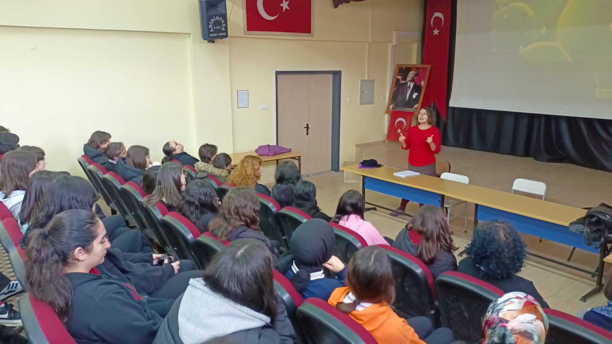

Bağımsız davranabilecek yaşam alanları, özgür düşünmeyi engellemeyecek hane içleri, içindeki canlılığının bastırılmayacağı bir yeryüzü iyi gelecektir çocuklara.
Özgeçmiş
Yaklaşık 15 yıldır hem kamu hastanelerinde hem özel kliniklerde olmak üzere aktif olarak çalışıyorum.
Aralıksız psikolog olarak çalıştığım çalışma hayatım boyunca edindiğim deneyimlerime yaslanarak okumaya, yazmaya, düşünmeye devam ediyorum.
Görüşmelerim esnasında, danışanlarımın kendi geçmişi, kültürel ve sosyal dinamiklerinin farklılığı zihnimde her zaman asılıdır.
Her yeni karşılaşma bana ayrı bir kapı aralar, ayrı bir davettir geçici misafirliğime. Geçici diyorum çünkü;insandaki iradenin gücüne inancım yüksektir, şunu bilirim ki düğümler çözülmeye başladığında, ortalık biraz sadeleştiğinde, etraf daha anlaşılır olmaya başladığında irade kaçınılmaz olarak kendisini gösterecek, danışan tek başına kendi enerjisiyle yoluna devam edecektir.
Psikoterapistin işlevi nedir diye soranlara eşlikçi derim, eşlik eden yani.
Psikoterapist; anlam kaybolduğunda, zihin dağıldığında, duygulanımlar ahengini kaybettiğinde insanın doğasında var olan o makul dengeye varılana kadar danışana eşlik eder.
Her kaygı benim açımdan kaygı bozukluğu olarak yorumlanamayacağı gibi her üzüntü veya ağlama sıklığının artmasını da depresyon olarak değerlendirmem. Sınıflandırılmış tanılardan mümkün olduğunca uzak dururum, hiçbir danışanım “sizde şu semptomlar var veya şöyle bir hastalık var” benzerinde cümleler duymamıştır benden.
Görüşmelerdeki temel sorularım; nerelerde güçsüz ve iradesiz kalıyoruz? İhtiyacımız olan ne? bizi kendi hayatımızda daha iradi ve güçlü yapacak seçenekler neler?
Bu sorular anlamını bulduğunda benim danışana panik atağınız var ya da depresyondasınız dememin de bir anlamı kalmıyor zaten.
Psikolog ile danışan arasındaki ilişki ne kadar sade ve güç ilişkisinden uzak olursa o kadar eşit ve sahici olacaktır.
